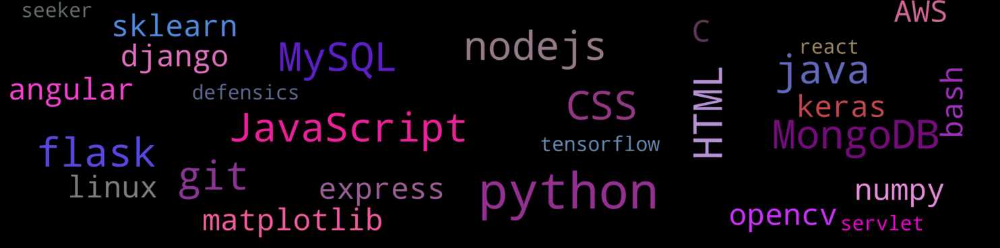

Avi Agrawal
Graduate Student in Computer Science
@ North Carolina State University
Making a computer solve the problem efficiently is the problem I love to solve.
With love for coding since 8 years, I've gained good experience in application development and it's associated methodologies with diverse range of academic and non academic projects and 2 internships. With passion and the will to work hard, I wish to start a full time role as Software Developer.
Graduate Student in Computer Science
@ North Carolina State University
Making a computer solve the problem efficiently is the problem I love to solve.
With love for coding since 8 years, I've gained good experience in application development and it's associated methodologies with diverse range of academic and non academic projects and 2 internships. With passion and the will to work hard, I wish to start a full time role as Software Developer.
Worked With

Education
{% if not loop.last %} {% endif %} {% endfor %}
Projects
{% if not loop.last %} {% endif %} {% endfor %}